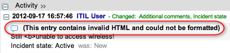

Using Journal Fields
| |
Note: This article applies to Fuji. For more current information, see Journal Field Types at http://docs.servicenow.com
The ServiceNow Wiki is no longer being updated. Please refer to http://docs.servicenow.com for the latest product documentation. |
Contents
1 Overview
There are three types of Journal field: journal, journal_list, and journal_input. They each behave differently.
- journal fields allow and store input, and they also display the combined inputs below the input box.
- journal_input fields allow and store input, but they do not display the combined inputs.
- journal_list fields do not allow or store input; they merely display the contents of other Journal fields upon which the journal_list field is dependent. If a journal_list field is dependent on more than one Journal field, it will chronologically interweave those fields' inputs.
2 Restrict the Number of Entries Sent in a Notification
Administrators can control the number of journal entries notifications include with the following system property.
| Property | Label | Description |
|---|---|---|
| glide.email.journal.lines | Number of journal entries (Additional comments, Work notes, etc.) included in email notifications (-1 means all). | Specifies the number of entries from a journal field (such as Additional comments and Work notes) included in email notifications. A value of -1 includes all journal entries.
|
3 Getting the Contents of a Journal Field into an Array
To put the contents of a journal field into an array so that you can iterate through each entry, you can use the following code:
var notes = current.work_notes.getJournalEntry(-1); //gets all journal entries as a string where each entry is delimited by '\n\n'
var na = notes.split("\n\n"); //stores each entry into an array of strings
for (var i = 0; i < na.length; i++)
gs.print(na[i]);
4 Using CODE Tags to Render HTML in a Journal Field
By default, ServiceNow escapes any HTML code you type in a journal field, and the text is saved exactly as it was entered. To specify HTML formatting in a journal entry, you can use the [code] tag, as follows:
[code]<a href="http://www.service-now.com">ServiceNow</a>[/code] (this text will add a hyperlink to the URL)
[code]<b> this text will be bold </b>[/code]
<b> but this text will not </b> (and the <b> tags will appear in the output)
| |
Note: You can only use one set of code tags per journal entry. If you use two sets, the closing tag of the first set and the opening tag of the second set are ignored. |
4.1 Restricting the CODE Tag in Journal Fields
Administrators can prevent journal fields from rendering HTML code by disabling support for the [code] tag.
- Navigate to System Properties > UI Properties.
- Clear the check box for Allow support for embedding HTML code by using the [code] tag (the glide.ui.security.allow_codetag property).
- Click Save.
4.2 Validating HTML in Journal Fields
Administrators can prevent users from saving invalid HTML in a journal field (Calgary release).
- Enter sys_properties.list in the navigation filter.
- Add the property glide.ui.allow_deep_html_validation.
- Set the Value to true (it is false by default).
- Click Save.
- Users now see a warning in the activity formatter when they enter invalid HTML code in a journal field.
- 
{kind=link}
5 Setting Display Limits
Journal fields can greatly increase the size of task records because they allow users to enter very large string values. Display limits prevent the instance from loading the entire journal field into memory. Administrators have the option to:
- Set the length at which journal fields stop displaying the entire field's contents and instead only display a portion (called a preview) of the field's contents. Users can still access the field's entire contents by clicking a Show All button.
- Set the size of the preview text the journal field displays.
- Set the maximum number of journal entries journal fields can display.
5.1 Setting the Maximum Display Size for Journal Fields
When a journal field exceeds the length set in this property, the instance shows a preview of the journal field instead of the field's entire contents. The preview includes a Show All button to display the rest of the field's contents. A separate property determines the number of characters the preview displays.
- Add a system property with the following settings:
Property Value Name glide.max_journal_list_size Description Size in megabytes when a journal field should display a preview rather than the field's entire contents. Type Integer Value 10 - Click Submit.
5.2 Setting the Journal Preview Size
When a journal field exceeds the size of the glide.max_journal_list_size property, the instance displays a preview rather than the field's entire contents. To specify the amount of text to display as a preview, set the following system property. Users can click the Show All button to see the rest of the field's contents.
- Add a system property with the following settings:
Property Value Name glide.shortened_journal_length Description Number of characters to display as a preview of journal fields. Type Integer Value 512000 - Click Submit.
5.3 Setting the Maximum Number of Journal Entries
To set the maximum number of entries the system shows in the activity formatter, edit the following system property. The activity formatter displays the entries starting with the most recent entry up to the maximum number.
- Enter sys_properties.list in filter navigation.
- Search for the property glide.history.max_entries.
- Edit the Value property.
Property Value Name glide.history.max_entries Description Maximum number of entries the system shows in the activity formatter. The default is 250. Type Integer Value 250 - Click Update.
6 Scripting
6.1 setValue()
The setValue() method is not supported for Journal fields. Instead, assign values in script as in the following example.
var gr = new GlideRecord('incident');
//query priority 1 incidents in the state of either 'new' or 'active'.
gr.addQuery('priority', 1);
var gc = gr.addQuery('state', 1);
gc.addOrCondition('state', 2);
gr.query();
while(gr.next())
{
//print a list of the incident numbers updated
gs.print(gr.number);
//add an entry to the 'work notes' journal field for each incident
gr.work_notes = "This is a high-priority incident. Please prioritize.";
gr.update();
}
7 Enhancements
7.1 Calgary
- A new property, glide.ui.allow_deep_html_validation, allows administrators to prevent users from saving invalid HTML in a journal field.